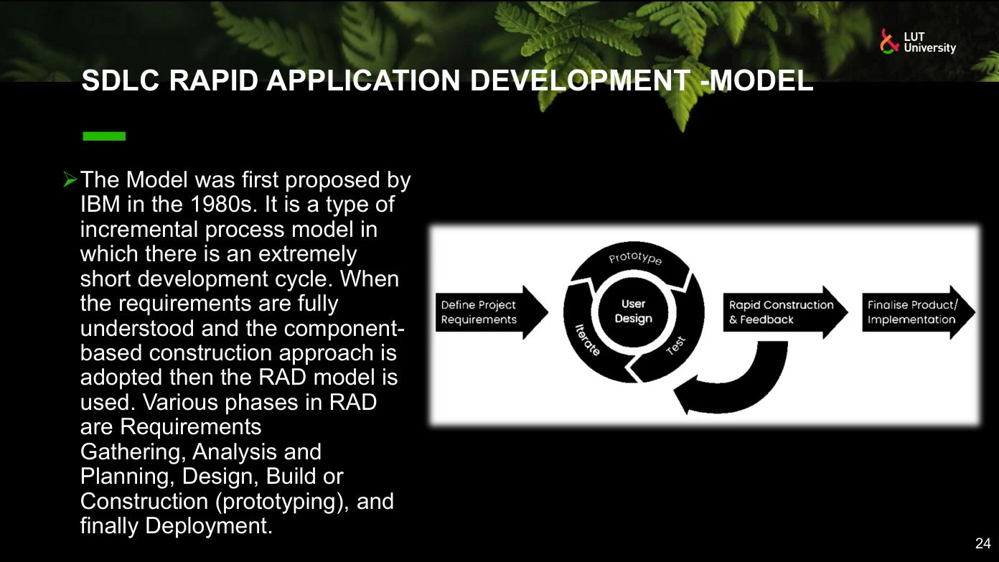
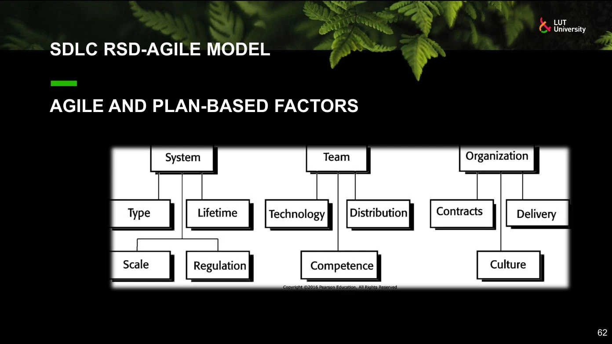

CT60A4050 软件工程基础 · 第 02 / 14 讲
第 2 讲 · SDLC 模型、瀑布、螺旋、V 模型与敏捷
Software Development Life Cycle Models and Agile Methods
所属章节：第 1 章 导论与过程模型
资料来源 · 1 项 / 已附 0 项
09_Week 3/1_SE - Lecture 2 - 2026.pdf未附原文件
未附文件仅列原始名称；版本与核对日期由维护者登记。
本节定位
上一讲把软件生产拆成四项基本活动；这一讲回答「这些活动按什么顺序、以什么节奏组织」。课件一口气讲了七种模型：瀑布、螺旋、V 模型、迭代、RAD、快速软件开发（RSD）与敏捷（XP、Scrum），最后给出「如何选模型」的判据表。信息量是全课最大的一讲。
本讲是第 3 讲（过程活动与过程改进）的前置：先有「模型」这张地图，才能理解过程活动为什么在不同模型里被排成不同顺序。第 11 讲的敏捷实践课会把这里的 Scrum 与 XP 落到具体仪式与度量上。
学完本节你应当能够：
- 说出 SDLC 的定义与目标，并列出瀑布模型的六个阶段及各阶段产出
- 对比瀑布、螺旋、V 模型、迭代、RAD 的适用条件与主要风险
- 准确复述敏捷宣言四条价值观与五条原则，并指出「右侧也有价值」的含义
- 列出 XP 的十余项实践，并解释重构、测试先行、结对编程各自解决什么问题
- 说清 Scrum 的三个阶段、三个角色、三个产物与一个仪式，并用 velocity 做简单排期
- 针对给定项目（需求稳定性、风险、团队规模、客户参与度）选出合适模型并给出理由
2.1 SDLC 是什么
课件定义：SDLC 是「a structured process that is used to design, develop, and test good-quality software」，据课件说法最早由 Winston N. Boyce 提出。它把软件开发的整个过程一步步定义清楚，目标是交付高质量、可维护、满足用户需求的软件，并为每个阶段规定计划，使各阶段能高效执行，从而在给定时间内以低成本交付。
幻灯片只写了「SDLC is a collection of these six stages」，没有逐一列出六个阶段名称（原图在 PDF 中）。按经典划分，六个阶段是：规划与可行性、需求分析、设计、实现（编码）、测试、部署与维护。答题时若被要求写六阶段，用这六个即可，并注明「课件以图示呈现」。
要区分两个词：SDLC 是「生命周期」——有哪些阶段；SDLC model 是「模型」——这些阶段如何排列、是否迭代、如何反馈。同一套阶段可以排出完全不同的模型。
2.2 瀑布模型的六个阶段
瀑布模型用于大型、复杂项目，特征是「结构化、顺序化」（structured, sequential）。典型适用条件：需求已明确定义、目标清晰、规模大、周期长。
| 阶段 | 关键活动 | 产出/要点 |
|---|---|---|
| 1 需求 Requirements | 可行性研究（理解问题、列出候选方案、比较利弊后选定）；需求分析与规格 | SRS 文档；分析要消除不完整性（incompleteness，遗漏）与不一致性（inconsistency，相互矛盾）；SRS 作为开发团队与客户之间的合同，未来争议以 SRS 为准 |
| 2 设计 Design | 把 SRS 转换为可用编程语言实现的形式；高层设计 HLD、详细设计 LLD、总体体系结构 | 软件设计文档 SDD |
| 3 开发 Development | 按设计编写各模块代码；单元测试；增量式集成 | 可运行模块；集成后的部分系统；每步集成后都要测试 |
| 4 测试 Testing | 系统测试：alpha（开发团队自己做）、beta（友好客户做）、acceptance（交付后客户做，决定接受或拒绝） | 测试报告与验收结论 |
| 5 部署 Deployment | 部署到客户真实环境验证性能；全面测试确保满足需求、无缺陷；UAT 由最终用户验证 | 上线系统；有时含用户培训 |
| 6 维护与演化 Maintenance and evolution | 维护占总工作量约 60%；三类维护 | 纠错性 corrective、完善性 perfective、适应性 adaptive |
三类维护必须能区分：corrective 修开发阶段未发现的错误；perfective 按客户要求增强功能；adaptive 把软件移植到新环境（新平台、新操作系统）。第 8 讲会把它扩展成三类并讨论其成本占比。
瀑布的优点（课件七条）：易懂；阶段逐个处理；每阶段定义清晰；里程碑明确；文档完备；强化好习惯（define-before-design、design-before-code）；对小项目与需求明确的项目有效。
瀑布的缺点：没有反馈路径（no feedback path）、难以容纳变更请求、阶段不可重叠、灵活性有限、干系人参与有限、缺陷发现晚、开发周期长。这七条要能对应到具体后果：缺陷发现晚 → 返工成本高；无反馈 → 需求错了只能一路错到底。
适用场景：需求已被充分理解、几乎不期待变更、中小规模、可预测、法规合规要求严格、客户偏好线性顺序、资源有限。典型应用：大型软件开发项目、安全关键系统（航空航天、医疗）、政府与国防项目、需求明确且稳定的项目。
2.3 螺旋模型
螺旋模型由 Barry Boehm 提出，是瀑布与迭代的结合，最大特点是支持风险处理（risk handling）。它的阶段数不固定，由项目经理根据项目风险动态决定——这也意味着项目经理在螺旋模型中角色极重。每一圈螺旋都是一次完整的开发周期：从需求收集与分析，到设计、实现、测试、维护。
四个象限（必须能按顺序说出）：
- 确定目标并识别备选方案：每圈开始时从客户收集需求，明确并细化目标，提出该阶段的可行方案。
- 识别并消解风险：评估所有方案、选出最优；识别该方案的风险并用最佳策略消解；本象限结束时为最优方案建立原型。
- 开发下一版本产品：开发已识别的功能并测试验证；本象限结束时得到软件的下一个版本。
- 评审并为下一圈做计划：客户评估已开发的版本；随后开始下一阶段的计划。
优点：每圈都做风险分析与处理；适合大型复杂项目；需求可在后期变更并被准确纳入；客户满意度高；迭代增量、灵活；强调风险管理；改善沟通；提升质量。
缺点：比其他模型复杂；昂贵，不适合小项目；过度依赖风险分析（没有经验丰富的专家就会失败）；阶段数未知导致时间估算困难；多次迭代与评审耗时；资源密集。
适用：需要频繁发布；适合先做原型；需要评估风险与成本；中高风险项目；需求复杂且含糊；任何时刻都可能修改；因经济优先级变化而不宜一次性长期承诺的项目。
2.4 V 模型与迭代模型
V 模型又称验证与确认模型（Verification and Validation model），过程按 V 字形顺序执行：左侧自顶向下逐层细化（需求 → 概要设计 → 详细设计 → 编码），右侧自底向上逐层验证（单元测试 → 集成测试 → 系统测试 → 验收测试）。其核心思想是「每个开发阶段都有一个对应的测试阶段」（association of a testing phase for each corresponding development stage）。
| 左侧开发阶段 | 右侧对应测试 | 验证的问题 |
|---|---|---|
| 需求分析 | 验收测试 acceptance testing | 系统是否满足用户需要 |
| 概要设计（体系结构） | 系统测试 system testing | 各组件集成的系统是否满足需求 |
| 详细设计 | 集成测试 integration testing | 模块间接口与交互是否正确 |
| 编码 | 单元测试 unit testing | 最小单元是否正确 |
课件只给了 V 模型的定义与图形，上表的「阶段—测试」对应关系是按 V 模型的标准含义补足的（第 12 讲 EXCEED 案例正是 V 过程：测试用例与需求、概设、详设同步开发）。
迭代模型把瀑布的顺序步骤与迭代设计的灵活性结合：允许在每个阶段做改进与变更，而不是等到项目末才改。它与增量开发的区别在于：迭代强调「反复重做同一部分直到正确」，增量强调「一块一块地交付」。
2.5 RAD 与快速软件开发
RAD（Rapid Application Development）由 IBM 在 1980 年代提出，是增量过程模型，开发周期极短。使用前提很苛刻：需求已被完全理解，且采用基于构件（component-based）的构建方式。
四个基本阶段：
- 需求规划 Requirements Planning：用需求获取技术（头脑风暴、任务分析、表单分析、用户场景、FAST——Facilitated Application Development Technique 等），并制定描述关键数据、获取方法与处理方式的结构化计划。
- 用户描述 User Description：收集用户反馈，用开发工具构建原型；即对第一阶段收集的数据做复核与验证，并识别数据属性。
- 构建 Construction：细化原型并交付；用强大的自动化工具把流程与数据模型转成可工作的产品，完成所有修改与增强。
- 切换 Cutover：测试不同团队开发的独立模块之间的所有接口；用自动化工具与子部件降低测试难度；随后由用户做验收测试。
快速软件开发（RSD）的背景：快速开发与交付已成为最重要的需求，因为业务需求变化快，实际上不可能产出一套稳定的需求；计划驱动开发对某些系统必要，但满足不了这种业务需求。敏捷方法因此在 1990 年代末出现，目标是大幅缩短交付可用软件的时间。
2.6 敏捷：宣言与原则
敏捷开发的特征（课件五条）：规格、设计与实现相互交织；系统以一系列版本或增量开发，干系人参与增量的规格与评估；频繁交付新版本供评估；广泛使用工具支持（如自动化测试工具）；最少文档，聚焦可工作的代码。
敏捷方法出现的原因：对 1980、1990 年代设计方法的「开销」不满。这些方法：聚焦代码而非设计；基于迭代；意图快速交付可工作软件并快速演化。目标是减少过程开销、快速响应需求变化而不过度返工。
敏捷宣言（2001）四条价值观，原文必须能背：
- Individuals and interactions over processes and tools（个体与互动 高于 流程与工具）
- Working software over comprehensive documentation（可工作的软件 高于 详尽文档）
- Customer collaboration over contract negotiation（客户协作 高于 合同谈判）
- Responding to change over following a plan（响应变化 高于 遵循计划）
紧接的一句最关键：“That is, while there is value in the items on the right, we value the items on the left more.”（右侧项也有价值，但我们更看重左侧项。）这句话是「敏捷不是不要文档、不要计划」的原文依据，简答题常考。
五条原则：
| 原则 | 英文要点 | 含义 |
|---|---|---|
| 客户参与 customer involvement | Customers should be closely involved throughout the development process; their role is to provide and prioritize requirements and evaluate iterations. | 客户全程深度参与，负责提供并排序需求、评估每次迭代。 |
| 增量交付 incremental delivery | The software is developed in increments with the customer specifying the requirements to be included in each increment. | 由客户指定每个增量包含哪些需求。 |
| 人重于过程 people not process | The skills of the development team should be recognized and exploited; team members should be left to develop their own ways of working. | 认可并发挥团队技能，不用规定性流程束缚成员。 |
| 拥抱变化 embrace change | Expect requirements to change and design the system to accommodate these changes. | 预期需求会变，并在设计中预留容纳变化的能力。 |
| 保持简单 maintain simplicity | Focus on simplicity in both the software and the process; actively work to eliminate complexity. | 软件与过程都要简单，主动消除复杂性。 |
适用性：一是在软件公司开发面向销售的中小型产品（几乎所有软件产品与 App 现在都用敏捷）；二是组织内部的定制系统开发，且客户明确承诺参与、外部规则与法规很少。
2.7 极限编程 XP
XP 是 1990 年代末极具影响力的敏捷方法，采取「极端」的迭代做法：
- 新版本可能每天构建多次；
- 每 2 周向客户交付一个增量；
- 每次构建都必须运行所有测试，只有测试全部通过，构建才被接受。
十余项实践（课件分两页列出，考试常考「下列哪项不是 XP 实践」）：
| 实践 | 英文说明 | 要点 |
|---|---|---|
| 增量规划 incremental planning | Requirements are recorded on story cards; stories for a release are chosen by time available and relative priority; developers break stories into tasks. | 故事卡 → 发布内容 → 开发任务；时间是硬约束，优先级决定取舍。 |
| 小规模发布 small releases | The minimal useful set of functionality that provides business value is developed first; releases are frequent. | 先交付最小可用功能，再逐步叠加。 |
| 简单设计 simple design | Enough design is carried out to meet current requirements and no more. | 只为当前需求做足够的设计，不预先过度设计。 |
| 测试先行 test-first development | An automated unit test framework is used to write tests before the functionality is implemented. | 先写测试再写实现。 |
| 重构 refactoring | Developers refactor continuously as soon as code improvements are found. | 持续改善代码结构，保持简单可维护。 |
| 结对编程 pair programming | Developers work in pairs, checking each other’s work. | 两人一台机器，互为评审。 |
| 集体所有 collective ownership | Pairs work on all areas of the system; anyone can change anything. | 避免知识孤岛，全员对全部代码负责。 |
| 持续集成 continuous integration | As soon as a task is complete it is integrated; after any integration all unit tests must pass. | 任务完成即集成，集成后测试必须全绿。 |
| 可持续节奏 sustainable pace | Large amounts of overtime are not acceptable. | 长期加班会降低代码质量与中期生产率。 |
| 现场客户 on-site customer | A representative of the end user is available full time; the customer is a member of the team. | 客户是团队成员，负责把需求带进来。 |
XP 与敏捷原则的对应关系（课件总结）：增量开发 ← 小而频繁的发布；客户参与 ← 客户全职嵌入；人重于过程 ← 结对、集体所有、避免长时间加班；支持变化 ← 定期发布；保持简单 ← 持续重构。
现实提醒：XP 偏技术，难以与多数组织的管理实践整合，因此「原教旨 XP」并不广泛使用；真正被广泛借用的核心实践是：用户故事做规格、重构、测试先行、结对编程。
2.8 三项核心技术实践：故事、重构、测试先行
用户故事（user stories）：在 XP 中客户是团队一员，负责需求决策；需求以故事或场景表达，写在卡片上；开发团队把故事拆成实现任务，任务是排期与成本估算的基础；客户根据优先级与排期估算挑选下个发布要做的故事。
重构（refactoring）：传统观点是「为变化而设计」，值得花时间预判变化以降后期成本；XP 认为变化无法可靠预判，因此不预判，而是持续改进代码，使变化真的到来时更容易实现。团队在没有立即需求时也主动寻找并实施改进：这提升了可理解性，从而减少文档需求；因为结构清晰，变更更容易。但有些变更需要体系结构级重构，代价高得多。
测试先行 / 测试驱动开发（test-first / test-driven development）：测试在 XP 中处于中心地位，每次变更后都测试。XP 测试的特征：测试先行；从场景出发增量开发测试；用户参与测试的开发与验证；用自动化测试框架在每次构建时运行全部组件测试。
TDD 的具体做法：测试写成程序而非数据，因而可自动执行；测试自身包含「是否正确执行」的检查；通常依赖 JUnit 之类框架；新增功能时自动运行全部新旧测试，从而检查新功能是否引入错误。测试先行的价值在于：写测试的过程就是澄清需求的过程。
测试先行的三个已知问题（高频考点）：程序员偏爱写代码不爱写测试，可能走捷径写出不完整的测试（不检查所有可能的异常）；有些测试很难增量编写，例如复杂界面中的「显示逻辑」与屏幕间工作流；很难判断一组测试是否完备——系统测试再多，也可能没有覆盖全。
测试自动化（test automation）：测试在工作任务实现之前就被写成可执行组件；这些组件应独立、能模拟输入提交、能检查输出是否符合规格；自动化框架让「写可执行测试、提交一批测试执行」变得容易；因此任何时候都能快速跑一遍测试，新代码引入的问题能被立即发现。
结对编程（pair programming）：两人同机共同开发；动态配对，使所有人彼此合作过；它形成非正式评审——每行代码至少被两人看过；促进重构（全队都能从改进中获益）；促进集体所有权与知识扩散，降低人员离职带来的项目风险。课件特别指出：没有证据表明结对必然低效，反而有一些证据显示一对程序员比两个各自为战的程序员更高效。
客户在测试中的角色：帮助下个发布要实现的用户故事编写验收测试；随开发推进写测试，从而验证新代码正是客户需要的。但现实困难是：担任客户角色的人时间有限，无法全职投入；他们可能认为「提供需求已经够了」，不愿参与测试。
2.9 Scrum：角色、仪式、产物
Scrum 是敏捷方法，但它的关注点是管理迭代开发，而不是具体技术实践。三个阶段：
- 初始阶段（outline planning）：确立项目总体目标，设计软件体系结构。
- 一系列冲刺周期（sprint cycles）：每个周期开发系统的一个增量。
- 项目收尾阶段（project closure）：完成必要文档（系统帮助、用户手册），评估经验教训。
术语表（课件原文分两页，必须能英中对照）：
| 术语 | 定义 |
|---|---|
| Development team 开发团队 | 自组织（self-organizing）的开发小组，不超过 7 人；负责开发软件与其他必要项目文档。 |
| Potentially shippable product increment 潜在可交付的产品增量 | 一次冲刺交付的软件增量；理想状态下它已处于完成状态，无需再测试即可并入最终产品；实践中并不总能做到。 |
| Product backlog 产品待办列表 | Scrum 团队要处理的「待办」清单；可以是功能定义、软件需求、用户故事，或架构定义、用户文档等补充任务。 |
| Product owner 产品负责人 | 识别产品特性或需求、为其排优先级，并持续审视产品待办列表，确保项目持续满足关键业务需要；可以是一个人，也可以是一个小组。 |
| Scrum（daily meeting） | Scrum 团队的每日会议，回顾进展并确定当天要优先做的工作；理想情况下是全员参加的简短面对面会议。 |
| ScrumMaster | 确保 Scrum 过程被遵循，并指导团队有效使用 Scrum；负责与公司其他部分对接，确保团队不被外部干扰；Scrum 开发者坚持认为 ScrumMaster 不应被视为项目经理。 |
| Sprint 冲刺 | 一次开发迭代，通常 2–4 周。 |
| Velocity 速率 | 团队在一个冲刺内可完成的产品待办工作量的估计；理解速率有助于估计一个冲刺能覆盖多少内容，也是衡量绩效改进的基准。 |
团队协作方式：ScrumMaster 是促进者（facilitator）——安排每日会议、跟踪待办、记录决策、对照待办度量进展、与团队外的客户和管理层沟通。全队参加简短的每日会议（Scrum），成员分享信息、说明上次会议以来的进展、出现的问题、以及次日计划。
Scrum 的收益：产品被拆成可管理、可理解的块；不稳定的需求不会阻塞进展；全队对所有事情可见，沟通改善；客户看到增量按时交付并获得反馈；客户与开发者之间建立信任，形成「大家都预期项目会成功」的正向文化。
2.10 规模化敏捷与多团队 Scrum
敏捷在小中型、可共处一地（co-located）的团队中被证明有效；其成功很大程度来自「大家在一起」带来的沟通改善。规模化就是要改造敏捷方法，以应对多个团队、可能分布在不同地点的大型长期项目。
两个方向要区分：scaling up 指用敏捷开发小型团队做不了的大型系统；scaling out 指把敏捷引入到有多年软件开发经验的大型组织。规模化时必须保持敏捷的基本要素：灵活规划、频繁发布、持续集成、测试驱动开发、良好的团队沟通。
多团队 Scrum 的四个做法：角色复制（每个团队各有自己的 Product Owner 与 ScrumMaster）；产品架构师（各团队选出架构师，协作设计与演化整体体系结构）；发布对齐（各团队发布日对齐，使系统可演示且完整）；Scrum of Scrums（每日由各团队代表开会讨论进展与计划）。
2.11 敏捷的现实问题与选型
课件列出三类实际障碍：
- 合同：敏捷的非正式性与大公司常用的法律化合同定义不兼容；多数定制系统合同基于「规格」，而规格前置恰好排除了敏捷所依赖的「规格与开发交织」；按时间计费的合同又常被法务视为高风险，因为交付内容无法保证。
- 维护：敏捷最适合新软件开发，而大公司的软件成本主要来自维护既有系统；若敏捷要成功，必须能支持维护。两个关键问题：以最少文档为特征的敏捷开发出的系统是否可维护？敏捷能否有效用于响应客户变更请求的演化？此外，原开发团队若无法保留，问题会加剧（缺文档、客户参与难维持、团队连续性难保持）。
- 分布式与大型系统：大型系统通常是若干独立通信系统的集合，由不同团队（常在不同地点、时区）开发；大型系统是「brownfield」——与大量既有系统交互，很多需求与这些交互有关，不适合灵活增量；集成类项目中很大一部分工作是系统配置而非原创编码；大型系统还受外部法规约束、采购与开发周期长、干系人多样，无法让所有干系人都参与开发。
组织层面的阻力：没有敏捷经验的项目经理不愿承担新方法的风险；大型组织的质量程序与标准往往与敏捷不兼容；敏捷在技能水平较高的团队效果最好，而大组织技能分布很宽；长期使用传统系统工程流程的组织可能存在文化抵触。
「敏捷 vs 计划驱动」的判断因素（课件分三组）：
| 维度 | 偏向敏捷 | 偏向计划驱动 |
|---|---|---|
| 系统规模 | 小型、可共处一地的团队 | 大型、多团队、分布式 |
| 系统类型 | 无需大量前期分析的系统 | 需要大量前期分析、详细设计的系统 |
| 预期寿命 | 较短 | 长寿命系统需要文档把开发者意图传给支持团队 |
| 外部监管 | 监管少 | 受监管的系统通常要提交详细文档作为安全案例 |
| 人员技能 | 技能水平较高 | 把详细设计翻译成代码的较低技能即可 |
| 团队组织 | 同地协作 | 分布式团队可能需要设计文档 |
| 支撑工具 | 有可视化与分析工具即可少文档 | 缺少设计文档时必须有 IDE 支持 |
| 组织文化 | 能接受非正式流程 | 以详细文档为常态的工程组织 |
2.12 如何选 SDLC 模型
课件给出八组判据，每组都是「什么情况选什么」，考试常用「给情境选模型」的方式考：
| 判据 | 选择 |
|---|---|
| 需求清晰、不易变 | Waterfall 或 V-Model |
| 需求不清或易演化 | Agile 或 Iterative |
| 小项目、简单 | Waterfall 或 RAD |
| 大型、复杂、需要灵活性 | Agile、Spiral 或 DevOps |
| 高风险、不确定性大 | Spiral |
| 低风险 | Waterfall |
| 团队有迭代开发经验 | Agile 或 Scrum |
| 团队需要结构化指引 | Waterfall 或 V-Model |
| 需要频繁客户反馈 | Agile、Scrum 或 RAD |
| 初始规划后客户参与很少 | Waterfall 或 V-Model |
| 时间与预算固定 | Waterfall 或 V-Model |
| 时间与预算可调整 | Agile 或 Spiral |
| 需要快速发布 | Agile 或 RAD |
| 没有紧迫截止日期 | Waterfall 或 V-Model |
| 需要长期持续更新与支持 | Agile 或 DevOps |
| 几乎不需要维护 | Waterfall 或 V-Model |
| 干系人希望持续参与 | Agile 或 Scrum |
| 干系人只在大里程碑参与 | Waterfall 或 V-Model |
课件的结语值得记住：SDLC 是让软件开发更有序、更优化的框架；「No software model is the best it depends of varied situations」——没有最好的模型，只有适合情境的模型。
先分清两个词：SDLC 是生命周期，回答有哪些阶段；SDLC model 是模型，回答这些阶段如何排列、是否迭代、如何反馈。同一套六阶段能排出完全不同的模型。瀑布适合需求稳定、法规合规严格的项目，安全关键系统尤其典型：失效后果严重，必须把验证与文档前置、把变更纳入严格控制，而瀑布的阶段性评审与完备文档正好满足。反过来，瀑布缺反馈路径，缺陷发现晚、返工贵。辨析维护三类也很关键：纠错性修漏掉的错误，完善性按客户增强功能，适应性移植到新环境。
原版图页（源 PDF 插图页）







拓展深化 2.0 软件工程经济学定律：Boehm 缺陷修复成本指数曲线
需求阶段缺陷蔓延至运维阶段修复成本上升 100~200 倍的经验定律与数学解释，揭示敏捷迭代与 CI/CD 快速验证闭环的本质商业动因。
Barry Boehm 在《Software Engineering Economics》中提出的经典经验法则揭示了缺陷潜伏的非线性成本放大效应：
| 发现并修复缺陷的阶段 | 相对修复成本倍数 | 工程机理与代价来源 |
|---|---|---|
| 需求工程阶段（Requirements） | 1× | 仅需修改文字描述或线框图，耗时数分钟 |
| 架构与详细设计（Design） | 3× – 6× | 需调整 UML 类图、状态机或接口签名协议 |
| 编码阶段（Coding） | 10× | 需局部重构函数、调整局部数据结构与单元测试 |
| 系统集成测试（Integration Test） | 15× – 40× | 需回溯排查跨模块调用链路，触发大范围回归测试 |
| 生产环境运维（Post-Release Operations） | 60× – 200× | 灾难性代价：数据库脏数据清洗、客户信任丧失、紧急热修复发布 |
这解释了为何现代软件工程转向敏捷迭代（Scrum）与持续集成/持续交付（CI/CD）：敏捷的核心经济学目标不是“写代码更快”，而是缩短从代码产生到验证反馈的周期，把缺陷发现时间点强制收敛在成本最低的编码与单元测试阶段。
| English | 中文 | 说明 / 例句 |
|---|---|---|
| SDLC | 软件开发生命周期 | A structured process used to design, develop and test good-quality software. |
| waterfall model | 瀑布模型 | Plan-driven, sequential phases with no feedback path. |
| SRS | 软件需求规格说明书 | The document that serves as a contract between developers and customers. |
| spiral model | 螺旋模型 | Iterative model combining waterfall and iterative development with explicit risk handling; four quadrants per loop. |
| V-model | V 模型 | Verification and validation model; each development stage has a corresponding test stage. |
| iterative model | 迭代模型 | Repeats development steps so improvements can be made at every stage. |
| RAD | 快速应用开发 | Incremental model with very short cycles; needs fully understood requirements and component-based construction. |
| agile manifesto | 敏捷宣言 | Four value statements; the items on the right still have value. |
| extreme programming | 极限编程 | Agile method with builds several times a day, two-week increments and all tests on every build. |
| refactoring | 重构 | Continuous code improvement to keep the design simple and changes cheap. |
| test-first development | 测试先行开发 | Write an automated test before implementing the functionality. |
| pair programming | 结对编程 | Two developers at one machine, providing continuous informal review. |
| Scrum | Scrum | Agile method focused on managing iterative development; three phases, sprints of 2–4 weeks. |
| product backlog | 产品待办列表 | The list of to-do items the Scrum team must tackle. |
| sprint | 冲刺 | A development iteration, usually 2–4 weeks. |
| velocity | 速率 | Estimate of how much backlog effort a team can cover in one sprint. |
情境 A：某国防项目，需求已在合同中冻结，需通过严格评审与文档审查，交付周期 3 年。
情境 B：某初创公司要做一款面向消费者的 App，市场窗口 6 个月，需求每周都在变。
情境 C：某银行核心系统替换，涉及 12 个既有系统对接，法规审查严格，团队分布在三个国家。
请分别为 A、B、C 选模型并说明理由与主要风险。
分析：先抓三个判据——需求稳定性、风险与不确定性、团队与干系人结构。
A：瀑布（或 V 模型）。需求冻结、法规与安全关键、评审驱动，正符合瀑布「阶段清晰、里程碑明确、文档完备」的优势；V 模型更合适，因为每个开发阶段都有对应测试，验证与确认被显式绑定。主要风险是「无反馈路径」：一旦某阶段理解错误，缺陷会晚发现。缓解手段是把评审做扎实、在需求阶段引入原型验证关键假设。
B：敏捷（Scrum + XP 实践）。需求快速变化、需要快速交付可用软件、客户可深度参与，符合敏捷适用条件；用 2 周冲刺、产品待办列表排序、每冲刺交付潜在可交付增量。主要风险是「规模化成瘾」：早期架构若完全不设计，后期重构代价高——课件提醒体系结构重构非常昂贵，所以应在初始阶段做一次 outline planning 定架构。
C：混合，以计划驱动为骨架 + 迭代交付。大型 brownfield 系统、外部监管、分布式团队、众多既有接口，都不适合纯敏捷；但完全瀑布又无法应对 12 个系统的接口不确定性。可行方案是：总体用螺旋模型做风险驱动的前期（接口风险最大），实施阶段用迭代增量交付，并用 Scrum of Scrums 做跨团队协调、发布对齐。主要风险是「阶段数不可预知导致时间估算困难」（螺旋的固有缺点）。
通用思路：先判需求稳定性 → 再判风险高低 → 再判规模与分布 → 最后判监管与合同形式。四步之后，模型基本只剩一个候选。
情境：一个 6 人团队采用 XP，客户要求「随时可演示、随时可发布」。请给出一天与两周内的构建、测试、集成安排，并说明每条安排对应哪项 XP 实践。
解：
① 每日多次构建：开发者完成任务即集成到主干，触发自动构建；对应 continuous integration 与 XP 的「新版本可能每天构建多次」。
② 每次构建运行全部单元测试与验收测试，全绿才算通过；对应 test-first development 与「所有测试必须在每次构建时运行」。
③ 两人结对完成每个任务，代码每行至少两人看过；对应 pair programming 与 collective ownership。
④ 发现可改进结构立即重构，不夹带新功能；对应 refactoring 与 simple design。
⑤ 两周一个增量交付客户，增量内容由客户按优先级从故事卡中挑选；对应 incremental planning 与 small releases。
⑥ 不安排长期加班；对应 sustainable pace。
⑦ 客户代表全程在团队中，负责写验收测试与挑选故事；对应 on-site customer。
检查：这套安排是否满足「每次构建都被测试验证」？是——②保证了这一点。是否满足「增量只做最小有用功能」？是——⑤由客户按业务价值挑选。
情境：某 Scrum 团队过去三个冲刺完成的故事点数为 21、24、18。产品待办列表剩余 150 点。若每冲刺固定 2 周，问：预计还需几个冲刺？若客户要求 8 周内交付，团队应如何回应？
解：先算速率。取平均 velocity = (21 + 24 + 18) ÷ 3 = 63 ÷ 3 = 21 点/冲刺。剩余 150 点 ÷ 21 ≈ 7.14，向上取整为 8 个冲刺。
8 个冲刺 × 2 周 = 16 周，远多于客户要求的 8 周（即 4 个冲刺，约 4 × 21 = 84 点）。团队不应承诺 150 点，而应：① 按优先级把待办列表裁到约 84 点以内；② 明确告知「范围可减、日期不减」——这正是敏捷计划的原则（见第 9 讲：若功能无法在时限内完成，缩减范围，绝不完全延长交付日期）；③ 把剩余项放入后续发布。
注意：velocity 是「估计」而非承诺，第一次冲刺的数值最不可靠；用三点估算或规划扑克可以提高可信度（第 11 讲）。
情境：客户法务坚持「固定总价 + 固定范围 + 固定交付日」，而你方希望采用 Scrum。请指出冲突点，并给出两种可行的合同结构。
分析：冲突点在于：Scrum 的规格与开发交织，范围在开发中才逐步确定；固定总价固定范围要求范围前置，二者直接矛盾。课件原文指出：多数定制系统合同基于规格，而这「precludes interleaving specification and development」。
方案一：按工作量计费（time and materials）+ 范围弹性。合同约定团队规模、时间盒与单价，范围由产品待办列表动态排序；风险是客户法务认为「交付内容无法保证」。缓解：设置「最小可交付功能集」作为合同附件，并约定每冲刺演示与验收。
方案二：固定范围、浮动日期（或固定日期、浮动范围）。用故事点与 velocity 建立可核查的进度指标，合同约定「按优先级交付，日期固定、范围按速率调整」；第 12 讲 Pearson 案例正是用 velocity 与故事点把承诺变得可衡量。
结论：合同形式不是技术问题而是风险分配问题；答题时应同时指出「谁承担范围不确定的风险」这一本质。
- 列出瀑布模型六个阶段的名称与各阶段主要产出。
- 螺旋模型的四个象限分别做什么？为什么说它的「阶段数不确定」既是优点也是缺点？
- 敏捷宣言说「右侧项也有价值」，请用两个例子说明敏捷项目中仍然需要文档与计划。
- XP 的「简单设计」与传统的「为变化而设计」是否矛盾？请说明理由。
- 某 5 人团队要做校内二手交易平台，需求不稳定、客户就是学生代表。请选模型，并列出你会采用的三项具体实践。
- ScrumMaster 与项目经理的区别是什么？请从职责与权力两个角度回答。
参考答案与思路
1. 需求（SRS）→ 设计（SDD：HLD/LLD/体系结构）→ 开发（代码、单元测试、增量集成）→ 测试（alpha/beta/acceptance）→ 部署（上线、UAT、培训）→ 维护与演化（corrective/perfective/adaptive）。
2. ①确定目标与备选方案；②识别并消解风险（结束时产出原型）；③开发下一版本；④客户评审并计划下一圈。阶段数由项目经理按风险决定：优点是「按风险投入、不为低风险阶段浪费一圈」，缺点是「开始时无法确定要几圈，因而时间与成本难估算」。
3. 文档：架构决策记录、用户手册、监管所需的安全案例——这些无法靠「可工作的软件」替代；计划：发布计划与冲刺计划仍存在，只是粒度更细、可调整。敏捷反对的是「详尽且一旦写成就不再更新的文档」与「不可调整的长期计划」。
4. 不矛盾，但取向不同。为变化而设计是「预判并预留扩展点」，成本前置且可能预判错误；简单设计是「只满足当前需求，等变化真的发生再重构」，成本后置但依赖重构能力。XP 的选择建立在「变化不可可靠预判」这一判断上，因此把赌注押在重构而非预设计上。
5. 选 Scrum（或 XP 简化版）：需求不稳、客户可参与、团队小。三项实践示例：2 周冲刺 + 每冲刺演示；产品待办列表按价值排序，客户代表任 Product Owner；持续集成 + 单元测试（XP 借用到 Scrum 中）。
6. 职责：ScrumMaster 确保过程被遵循、移除障碍、保护团队免受外部干扰、促进会议；项目经理对范围、进度、预算、资源负责并向管理层汇报。权力：ScrumMaster 对「团队怎么做」有引导权但无命令权，不能分配任务；项目经理通常有任务分配与资源调度权。课件特别强调 ScrumMaster 不应被视为项目经理。
选模型与设计迭代的清单
- 判需求稳定性：能否在开工前冻结（能→瀑布/V；不能→迭代/敏捷）
- 判风险：是否有高不确定性需要每圈消解（是→螺旋）
- 判规模与分布：单团队同地（敏捷）／多团队异地（混合 + Scrum of Scrums）
- 判监管与合同：是否需要前置规格与安全案例（是→计划驱动骨架）
- 判客户参与度：能否全职嵌入（能→XP/Scrum；不能→计划驱动 + 里程碑评审）
- 定节奏：冲刺长度（2–4 周）、构建频率（每日多次）、测试门槛（全绿才合并）
- 定度量：velocity、故事点、缺陷密度、构建时长
- 写清「范围可减、日期不减」的交付规则，并让客户签字确认
| 源文件 | 页码 | 覆盖知识点 |
|---|---|---|
| 09_Week 3/1_SE - Lecture 2 - 2026.pdf | p5–p7 | SDLC 定义、目标、六阶段、七种模型清单 |
| 09_Week 3/1_SE - Lecture 2 - 2026.pdf | p8–p15 | 瀑布六阶段细节、SRS 合同作用、三类系统测试、三类维护、优缺点、适用与应用 |
| 09_Week 3/1_SE - Lecture 2 - 2026.pdf | p16–p21 | 螺旋模型四象限、优缺点、适用条件 |
| 09_Week 3/1_SE - Lecture 2 - 2026.pdf | p22–p25 | V 模型、迭代模型、RAD 四阶段 |
| 09_Week 3/1_SE - Lecture 2 - 2026.pdf | p26–p32 | 快速软件开发背景、敏捷特征、敏捷宣言、五条原则、适用性 |
| 09_Week 3/1_SE - Lecture 2 - 2026.pdf | p33–p48 | XP 定义与发布节奏、十余项实践、XP 与敏捷原则对应、用户故事、重构、测试先行、测试自动化问题、结对编程 |
| 09_Week 3/1_SE - Lecture 2 - 2026.pdf | p49–p58 | 敏捷项目管理、Scrum 三阶段与术语、冲刺周期、团队协作、收益、规模化 |
| 09_Week 3/1_SE - Lecture 2 - 2026.pdf | p59–p69 | 合同与计费问题、敏捷与维护、系统/人员/组织因素、大型系统、多团队 Scrum、组织阻力 |
| 09_Week 3/1_SE - Lecture 2 - 2026.pdf | p70–p73 | 选型判据八组、key takeaway |
| （补充） | — | V 模型「阶段—测试」对应表按标准含义补足；课件仅给定义与图形 |
| （跳过）09_Week 3/2_Exercise Sessions | 全篇 | IBM 案例讨论说明页（讨论题与阅读指南），案例本身已并入第 12 讲 |
| （补充） | — | SDLC 六阶段名称按经典划分补足；课件仅写「a collection of these six stages」 |